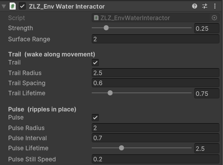
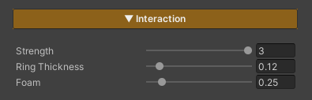

Water Interaction
Water ripples when a character or object moves through it. Rather than one ring that follows the object, the system drops discrete ripples that each expand outward and fade from where they were born — so a character wading across leaves a line of expanding rings behind them, like real footstep ripples.
It runs entirely on the GPU: no colliders, no render textures, no physics — cheap enough for both PC and Mobile.
Showcase — Trail
Showcase — Pulse
Setup
Two things have to be in place — miss either one and no ripples appear.
- On the water material — turn on the Interaction feature (the button grid at the top of the Inspector)
- On the character / object — add the
ZLZ_Env Water Interactorcomponent to anything that should disturb the water (the player, an NPC, a boat, a rolling prop)
Values on the component set the size and rhythm of each ripple (different per object). Values on the material set how the ripples look across that whole water surface (shared by every object).
Interactor (per object)

ZLZ_Env Water Interactor carries two completely independent emitters. Run both, one, or neither — and each has its own ripple size and lifetime, because a ripple made while walking and a ripple made while standing still are rarely the same size.
Main
- Strength (
0–2, default1) — how hard this object disturbs the water (scales the ripple height).0= no ripples at all - Surface Range (metres, default
2) — the vertical reach that still counts as “touching the water”. Ripples only spawn while the object is over the water’s area and within this distance of its level. It keeps a character crossing a bridge 20 m up from rippling the lake below
Trail — a wake along movement
Drops a ripple as the object moves, leaving a wake along its path. Wants a short lifetime so the ripples snap out and clear quickly behind a moving character.
- Trail — enable / disable this emitter
- Trail Radius (metres, default
1.5) — how big each ripple grows - Trail Spacing (metres, default
0.5) — how far the object must travel before it drops the next ripple. Smaller = a denser wake - Trail Lifetime (
0.1–4seconds, default1.2) — how long each ripple lives
Pulse — ripples in place
Emits a ripple on a fixed interval while the object is roughly still. Suits a character treading water, a fountain, a dripping source — and wants a long lifetime so the rings spread out slow and soft.
- Pulse — enable / disable this emitter
- Pulse Radius (metres, default
1.2) — how big each ripple grows - Pulse Interval (seconds, default
0.6) — the time between ripples - Pulse Lifetime (
0.3–8seconds, default3) — how long each ripple lives - Pulse Still Speed (metres/second, default
0.2) — counts as “standing still” at or below this speed. Move faster and Pulse pauses so the Trail wake takes over. Set it high to always pulse, moving or not
Behaviour worth knowing
- Trail and Pulse never stack — once the character walks, Pulse pauses on its own, leaving just the wake instead of a mess of overlapping rings
- The Pulse timer keeps counting while moving — so the first ring lands the moment the character stops, like planting your feet, rather than waiting out a full interval
- Radius and Lifetime work together — a ring expands out to its Radius over exactly its Lifetime, so a shorter Lifetime makes the ripple expand faster. Radius only sets the final size
- Gizmos — select the object and look in the Scene view: the blue sphere is Trail Radius, the green one is Pulse Radius. Handy for sizing them against the character
- Play mode only — ripples run on the game clock (they honour
Time.timeScale, so slow motion slows the rings too). Unlike Global Wind, they do not animate in Edit Mode
Material Settings (Interaction section)

These three values shape every ripple on that water surface (keep the Interaction feature on).
- Strength (
0–3, default1) — the overall ripple strength for this surface, multiplied on top of each object’s own Strength - Ring Thickness (
0.02–1, default0.12) — the width of the ring band, in real metres and deliberately decoupled from ripple size, so scaling Radius up or down never changes how crisp the ring reads. Lower = a sharp thin ring, higher = a soft wide one - Interaction Foam (
0–2, default0.5) — white foam riding the ring crest.0= just the surface disturbance, no foam
Ripples Reach Every Other Feature for Free
Ripples work by bending the water’s surface normal at that spot rather than painting an overlay, so all the shading follows them automatically — nothing extra to set up.
- Specular / Sun Glint — sunlight breaks up along the ring crests
- Reflection — the mirror image warps where the water is disturbed
- Refraction — the view through the water wobbles with each ring
- Lighting — crests catch the light, troughs fall into shadow
Limits
- 16 live ripples across the whole scene — that counts ripples, not interactors. A single walking character can hold several at once
- 8 ripples per interactor — past that, its oldest ripple is dropped first
- Over 16, the ripples nearest the camera win, so what disappears is distant rings you could barely see anyway
- The cap costs nothing until the ripples actually exist — the shader loops over the live count, not always up to 16
Surface Gate
An interactor only spawns ripples while it is genuinely near a water surface. The gate needs the ZLZ_EnvWater component on the water object to know where the surface level is.
- If the scene has no
ZLZ_EnvWaterat all, the gate stays open (bare water meshes from an older setup keep working exactly as before) - Several water bodies at different heights are supported — a character only disturbs the one they are actually touching
- With the Waves (Shore Breath) feature on, Surface Range automatically allows for the wave height, so a character never falls out of the gate at the top of the swell
- Jumping into the water resets the trail anchor, so the first ring spawns right at the point of contact instead of stretching back to where the character stood on the bank